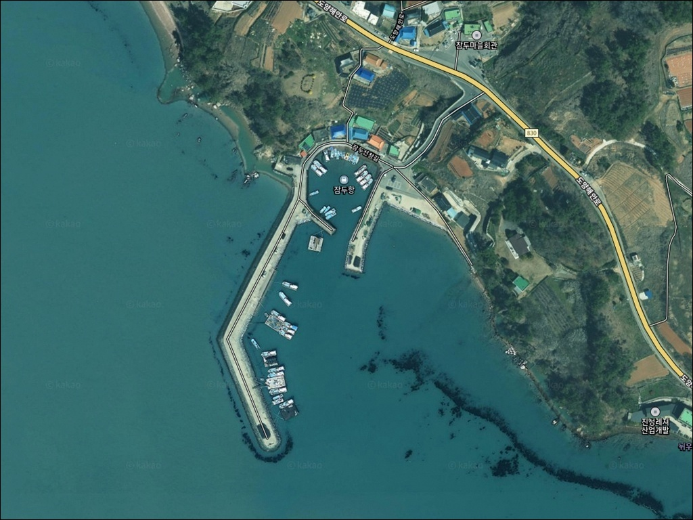
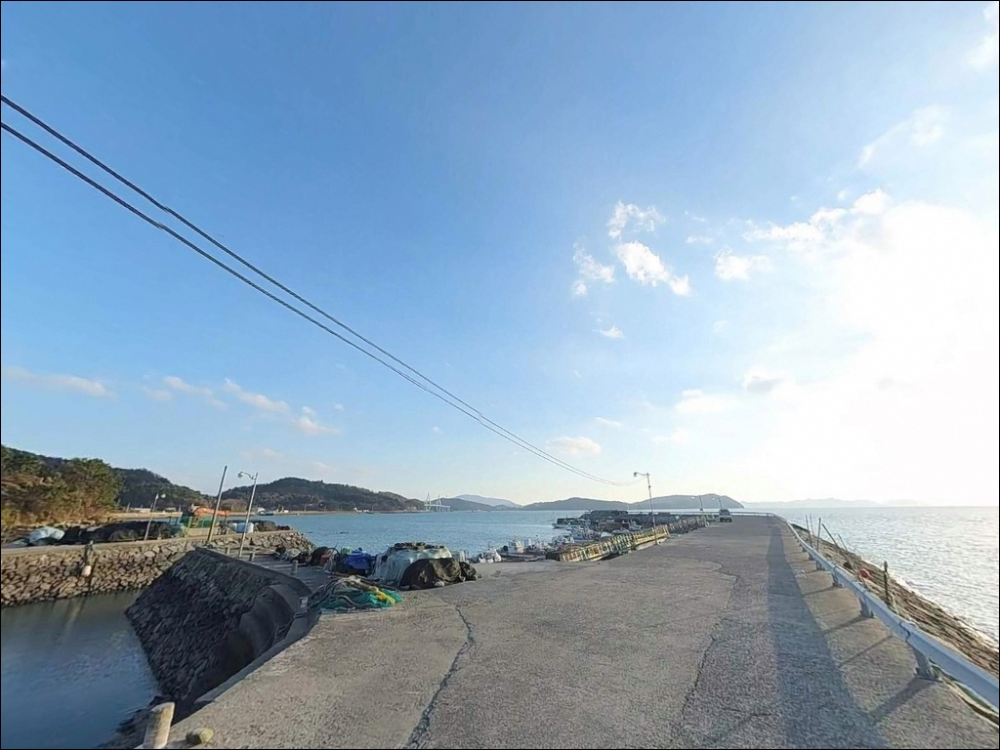
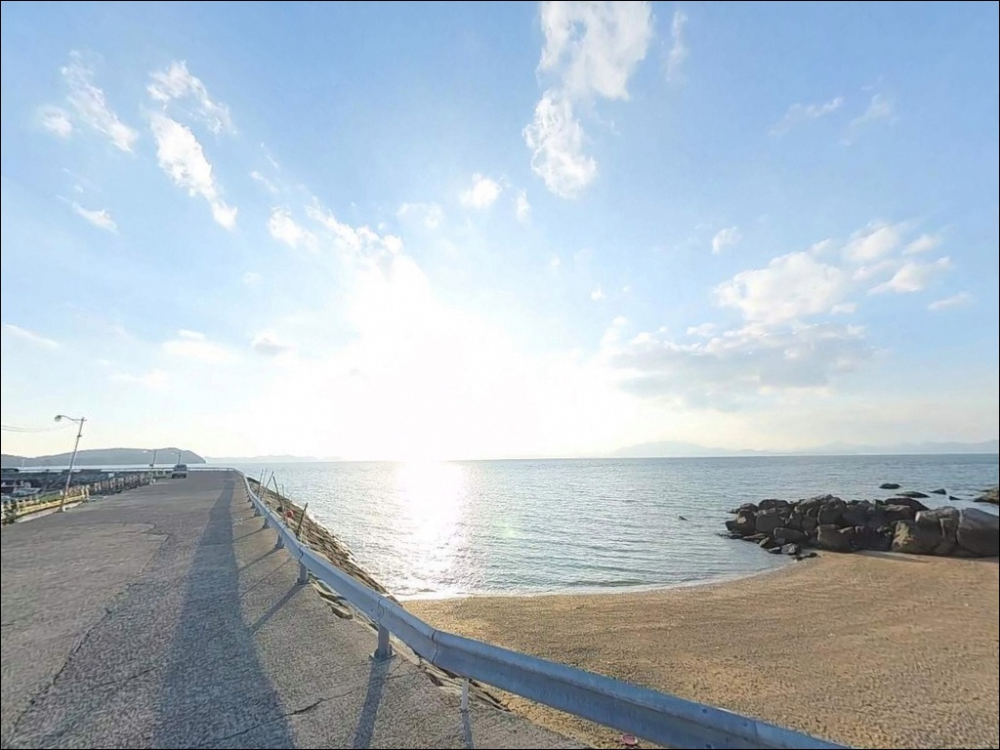
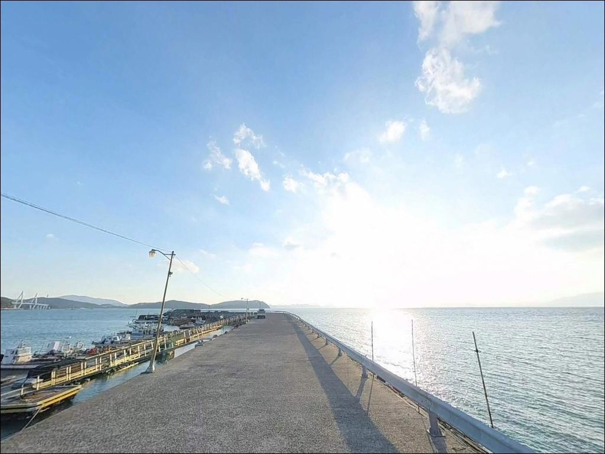
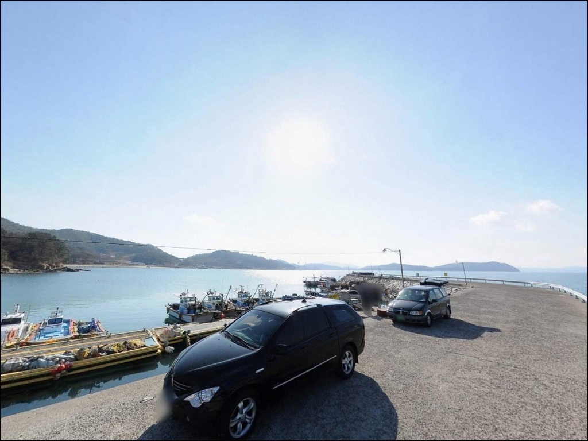
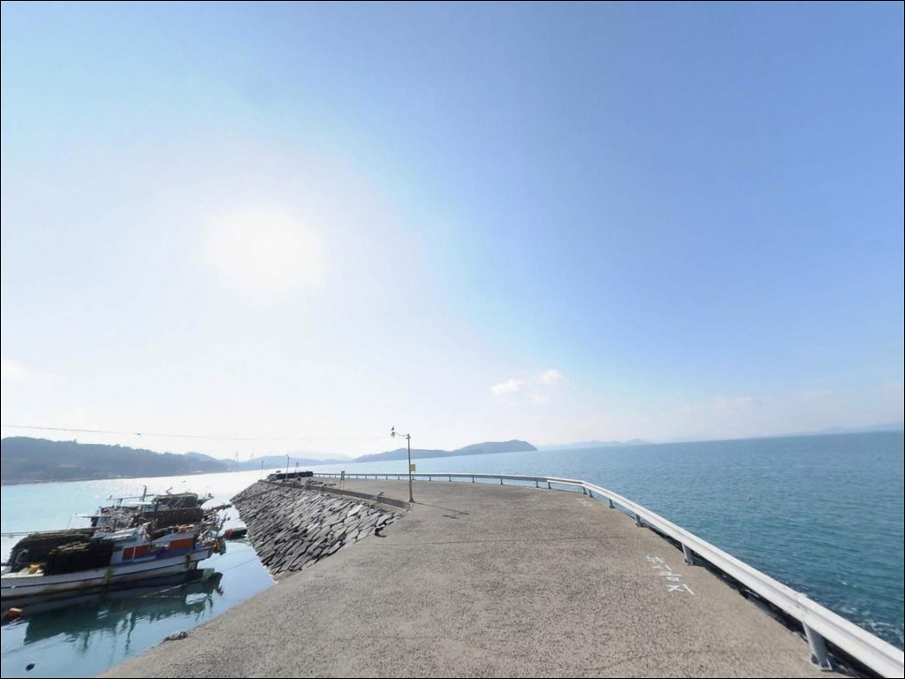
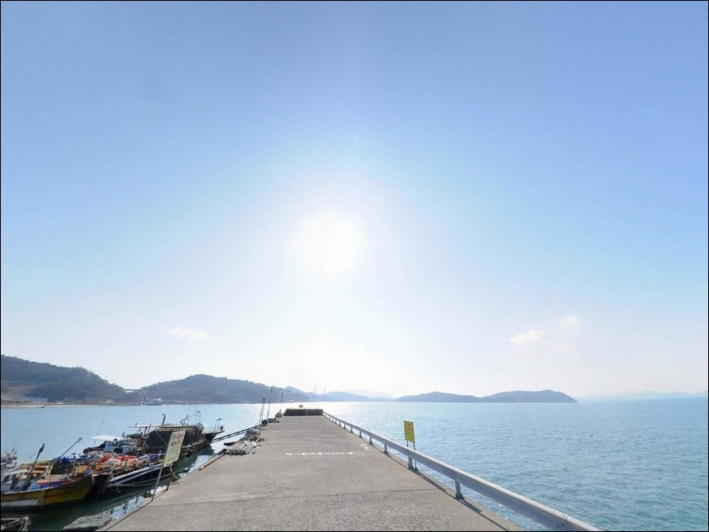
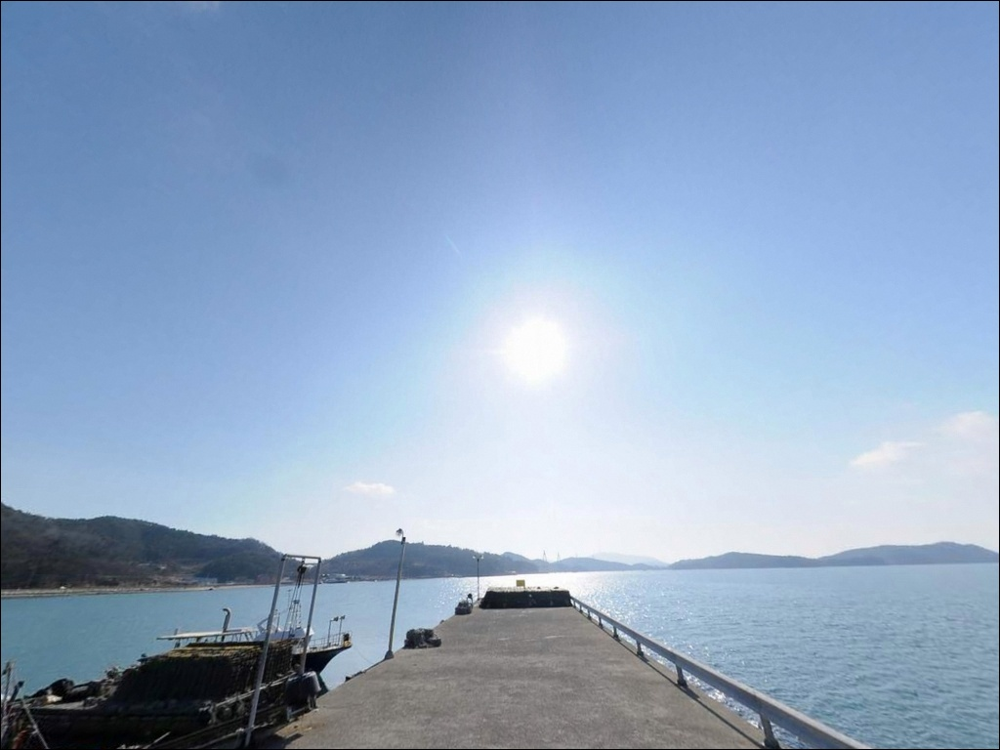
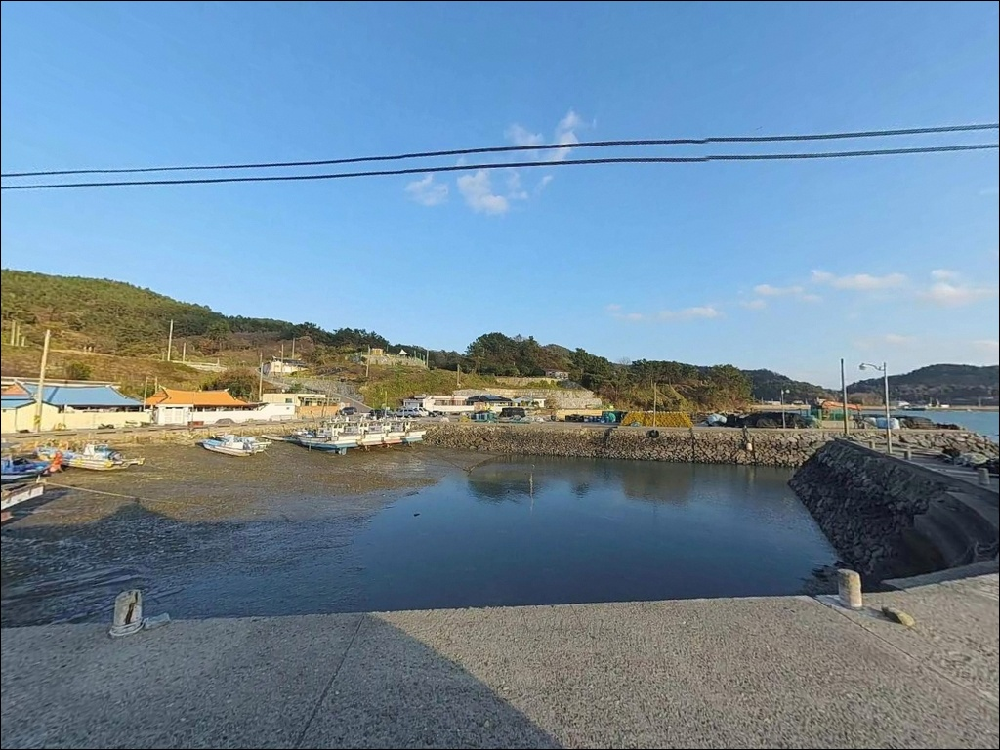

썰물에 조류 멈출 때, 잠두항 방파제 들물 돌며 끝단에 몰린 감성돔
이 페이지에는 광고(제휴 링크 포함)가 있으며, 광고 링크를 통해 구매하면 운영자가 판매 수익 또는 수수료를 받을 수 있습니다. 포인트 사진: 카카오맵 스카이뷰·로드뷰. 이 페이지의 지도·사진 이미지는 카카오맵의 실제 서비스 이미지와 다를 수 있습니다.


포인트 안내
잠두항
전남 고흥군 도양읍 용정리 2295-16
잠두항 외항에서 낚시 자리를 잡고도
조과를 얻지 못하는 경우는 대부분
물때 진입 시각을 놓친 데서 비롯됩니다.
들물이 돌기 전 썰물 막바지에 앉으면
조류가 거의 흐르지 않아
어느 채비를 써도 반응이 드문 구조입니다.
이 글은 잠두항의 진입 동선과
주차 여건, 낚시 지형 구조,
어울리는 낚시 방식과 대안 포인트에 집중합니다.
조황 단정이나 특정 어종 보장은
이 글의 범위에 포함되지 않습니다.

1. 진입 동선과 포인트 접근성
잠두항은 녹동항에서 북서쪽으로
약 1.5~2km 거리에 위치한 지방어항입니다.
해안도로인 도양해안로를 따라 이동하면
조선소 단지를 지난 직후
항으로 내려가는 내리막 포장도로가 시작됩니다.
진입로 전 구간이 포장되어 있으며
승용차·SUV 기준 양방향 교행이 가능한
폭으로 이어집니다.
항 내부까지 진입한 뒤
마을 앞 공터에서 회차가 가능합니다.
일반 승용차는 물론
캠핑카 수준까지 회차와 주차 동선이
자연스럽게 연결되는 구조입니다.
낚시 짐을 내린 뒤
방파제 초입까지 도보 이동 거리가 짧아
이동 부담이 낮은 편입니다.
주차는 방파제 입구 옆 공터와
선착장 주변 직선 구간을 주로 활용합니다.
낚싯배 출항 이른 새벽에는
선주와 선상낚시 이용객 차량이 집중되는 만큼,
어민 작업 동선을 막지 않는 자리가
우선 조건입니다.

2. 차박 환경과 야간 체류 여건
잠두항은 소형 어촌마을과 항이 맞닿은 구조로,
민가가 항 주변에 일정 밀도로 분포합니다.
완전한 노지형 차박보다는
"마을 바로 앞 항구 차박"
성격으로 인지하는 편이 현실적입니다.
야간에는 항내 가로등과
어항 시설 조명이 기본적으로 켜져 있어
최소한의 시야 확보가 됩니다.
다만 낚싯배 출항지 특성상
이른 새벽에는 선박 엔진음과
작업 소음이 발생하는 편이라,
취침 시각과 출조 시각을 맞춰
계획하는 것이 좋습니다.
외해를 향해 열린 구조이므로
남~서 방향 바람 영향을 받는 날에는
방파제 방향으로 파도 소음이 전달될 수 있습니다.
출발 전 기상청 해양 예보를 확인하고
파고 1.5m 이상이 예보된 날에는
체류 자체를 재검토하는 편이 안전합니다.


3. 주변 편의시설 및 인프라 현황
잠두항에서 차량으로 5~10분 거리인
녹동 시가지에 편의점, 식당, 마트, 주유소가
집중되어 있습니다.
반경 3km 이내에 국가어항인
녹동항이 위치해 있어,
낚시 소품 보충과 식사 해결이
현실적으로 가능한 접근성입니다.
잠두항 자체는 소규모 어항 구조로
별도의 편의 시설을 기대하기 어렵습니다.
낚시 소품, 미끼, 얼음, 식수 모두
녹동 시내에서 사전에 준비하고
진입하는 것이 기본입니다.

4. 방문 전 반드시 챙겨야 할 준비사항
잠두항 방문에서 가장 먼저 확인할 것은
물때입니다.
도양읍 일대는 조차가 큰 서남해안 해역으로,
들물이 외항으로 흘러드는 타이밍과
조류가 정지하는 정조 구간이
낚시 자리 운영에 직접적인 영향을 줍니다.
바다타임에서 용정리 기준 물때를 확인하고
출발 시각을 맞추는 것이 기본 전략입니다.
뻘바닥 지형 특성상 채비 밑걸림은
많지 않은 편이지만,
외항 발판이 다소 높아
물고기를 끌어올릴 때 뜰채가 필수입니다.
뜰채 없이 출조하면
랜딩 단계에서 손실이 생길 수 있습니다.
방파제 외항 측은 남~서 방향으로
외해에 직접 노출된 구조입니다.
기상이 변화할 때 파고와 풍속이
빠르게 올라올 수 있으므로,
출조 당일 아침에도 기상 예보를
한 번 더 확인하는 것이
안전 출조의 기본 조건입니다.

들물이 돌아야 낚시가 시작되는
잠두항 외항 구조
잠두항은 방파제 179m와
선착장 83m가 결합된 지방어항으로,
방파제 외항 전역이 낚시 포인트로 기능합니다.
외항 측에는 테트라포드가 없고
방파제 콘크리트 상면에서
직접 낚시대를 내릴 수 있는 구조입니다.
바닥 지형은 뻘 위주로 형성되어 있으며,
수심은 방파제 초입부보다
끝단으로 갈수록 깊어지는 구조입니다.
들물 조류가 외항으로 흘러들기 시작하면
방파제 끝단과 조류가 꺾이는 구간에
어종이 집결하는 패턴을 보입니다.
반대로 썰물 막바지에는 조류가 정체되어
입질 빈도가 현저히 낮아지는 편입니다.
내항 쪽은 조류 영향이 적고
수심이 완만한 수역입니다.
외항이 여의치 않을 때
만조 전후 타이밍을 활용해
내항 측에서 가벼운 채비를 운용하는 방식도
선택지가 됩니다.
출조 전 최신 조황은 반드시
"잠두방파제 낚시", "녹동 조황" 키워드로
검색해 확인하시기 바랍니다.


6. 잠두항에 어울리는 낚시 스타일 제안
외항 방파제 끝단과 조류 꺾임 구간에서는
감성돔 릴찌낚시가 잘 맞는 방식입니다.
들물 중들물 이후 조류가 본격적으로
흘러드는 구간을 중심으로
찌 채비를 조류 방향으로 흘려보내는
운용이 이 지형에 잘 어울립니다.
방파제 끝단에서 외항 방향 조류를
확인한 뒤 자리를 고정하는 것이
기본 순서입니다.
뻘바닥 지형이 넓게 펼쳐진 외항 전면에는
갑오징어와 주꾸미를 노리는 에깅이
효과적인 방식입니다.
특히 가을 시즌에 이 지형대에서
갑오징어 루어 낚시가 성과를 내는
패턴이 확인되는 구역입니다.
바닥 끌기 방식보다 중층 폴링을
활용하는 채비가 뻘바닥에 적합합니다.
원투낚시는 방파제 북쪽 구간과
선착장 주변 외향 쪽에서
붕장어와 보리멸을 대상으로 운용합니다.
들물 조류 흐름에 맞춰
채비를 외항 방향으로 흘려두는 방식이
이 뻘바닥 포인트에서 유효합니다.
야간 시간대에는
농어 루어와 볼락 라이트게임도
병행 운용이 가능한 환경입니다.

7. 대안 포인트와 플랜 B 동선
잠두항 조황이 기대에 못 미치거나
주차 공간이 여의치 않을 때는
녹동방파제가 첫 번째 이동지입니다.
차량으로 5~10분 거리이며,
소록도와 녹동항 사이 물골로
조류가 항상 흘러
물때에 상관없이 낚시가 가능한 구조입니다.
감성돔, 문어, 갑오징어 포인트로
알려진 고흥 대표 방파제입니다.
조금 더 이동이 가능하다면
도양읍 장계리 방향
장계방파제를 대안으로 활용합니다.
약 5km 거리이며,
외항 석축 구조로 발판 접근이 편하고
만조 시 수심 7m 내외로
원투와 찌낚시 모두 대응이 가능합니다.
차박 거점을 바꿔야 할 상황에서는
녹동항 인근 공영주차장이
현실적인 대안입니다.
편의시설 접근이 잠두항보다 훨씬 편리하며,
수산물 시장과 식당이 가까워
출조 피로를 풀기 좋은 환경입니다.

들물 타이밍만 맞추면
잠두항은 달라 보입니다
원투낚시, 에깅, 릴찌낚시를
모두 한 자리에서 운용하고 싶은 낚시인이라면
잠두항의 방파제 외항 구조가
잘 맞는 환경입니다.
테트라포드 없이 방파제 상면에 직접 앉고,
항 앞 공터에 차를 대고 바로 낚시를 시작할 수 있어
진입 피로가 낮습니다.
반면 물때 확인 없이
썰물 막바지에 도착하거나,
기상 예보를 놓치고 파도가 높은 날에
외항에 무리하게 앉는다면
아무 성과 없이 자리를 접어야 하는
상황이 만들어질 수 있습니다.
물때 확인, 기상 체크, 뜰채 준비,
이 세 가지만 갖추면
녹동권에서 효율 높은 출조가 됩니다.
녹동 시가지 인프라를 배경으로
항 앞 공터에서 조용히 하룻밤을 보내고
이른 들물에 외항으로 나서는 차박 출조라면,
잠두항은 낚시와 차박을 자연스럽게
엮어주는 포인트입니다.